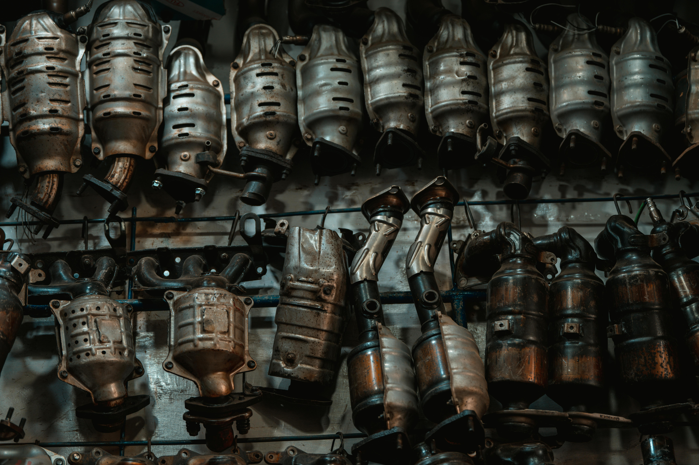
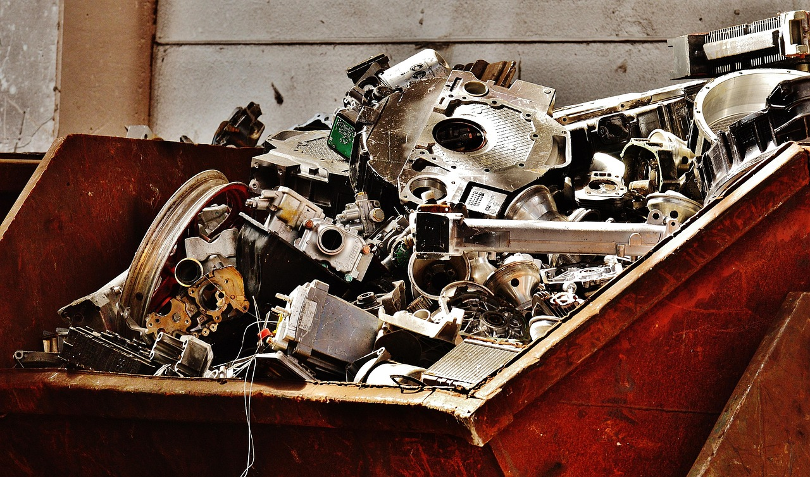
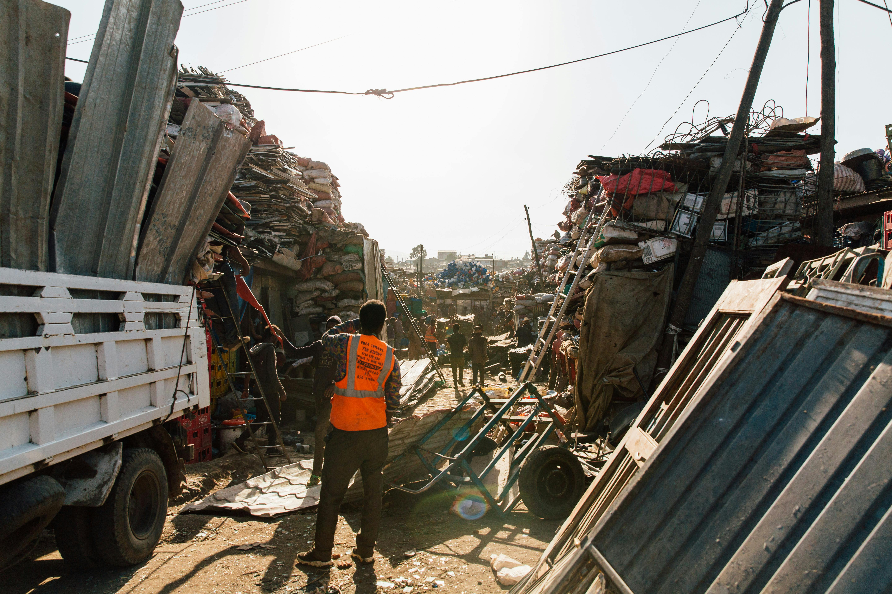

Our Recycling Services
Comprehensive metal recycling solutions for individuals and businesses
Catalytic Converter Recycling
Catalytic converters contain valuable precious metals including platinum, palladium, and rhodium. Our specialized processing ensures you receive maximum value for these components.
Our Catalytic Converter Services Include:
- Free evaluation and transparent pricing
- Pricing based on current precious metal market rates
- Identification of converter types and models
- Documentation for automotive businesses
- Bulk processing for auto repair shops and salvage yards
We accept all types of catalytic converters from domestic and foreign vehicles, including cars, trucks, SUVs, and commercial vehicles.

Scrap Metal Recycling
We recycle all types of ferrous and non-ferrous metals with competitive pricing updated daily based on market rates.
Metals We Accept:
- Copper (wire, tubing, sheets)
- Aluminum (cans, siding, wheels)
- Brass (fixtures, fittings, decorative items)
- Steel and Iron (structural, automotive parts)
- Stainless Steel (appliances, industrial equipment)
- Lead (batteries, weights)
- Zinc and other specialty metals
Our facility is equipped with industrial scales and sorting equipment to process metals of all types and quantities.

Commercial Recycling Solutions
We offer specialized services for businesses that generate recyclable metals, including:
- Auto repair shops and dealerships
- Manufacturing facilities
- Construction companies
- Industrial operations
- Demolition contractors
Commercial Services Include:
- Container placement at your facility
- Scheduled pickup services
- Volume-based pricing
- Environmental compliance documentation
- Customized recycling programs

Pricing Information
Metal prices fluctuate daily based on global market conditions. We update our pricing daily to ensure you receive fair market value for your recyclable materials.
For current pricing or to request a quote, please contact us directly.
Ready to Recycle?
Contact us today for current pricing or to schedule a pickup.
Get Started